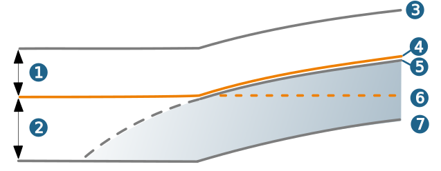
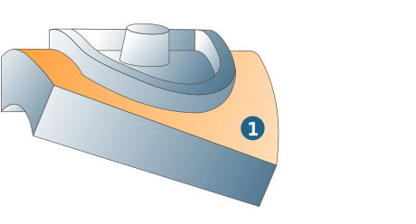

Strategy
Machining options
Pocket inside out: Material removal during roughing always takes place from inside to outside. Approach from outside does not take place.
Axial sorting: Areas like corners or pockets are sorted axially and machined consecutively, so that empty paths and machining times are reduced.
Mode
Part surface mode: The Drive surfaces (in the Geometry section) define the scope to be machined in terms of lateral dimensions and specify the orientation of the tool. The vertical machining area is defined by the Top and Bottom parameters (on the Parameters tab). Both values are relative and refer to the Drive surfaces that form the zero point of the vertical machining area.
Drive surfaces: The Drive surfaces (mandatory) define the scope to be machined in terms of lateral dimensions and specify the orientation of the tool. The vertical machining area is defined by the Top and Bottom parameters (on the Parameters tab). Both values are relative and refer to a zero point that is defined as follows:
-
Bottom surfaces are defined: The zero point corresponds to the Bottom surfaces if they are above the Drive surfaces, including (positive or negative) offset. The zero point corresponds to the Drive surfaces if the Bottom surfaces are below the Drive surfaces, including (positive or negative) offset.
-
Bottom surfaces are not defined: The zero point corresponds to the Drive surfaces, including (positive or negative) offset.
The following simplified graphic shows the connection between Drive and Bottom surfaces in the Drive surfaces mode.
(1) Negative offset, (2) Positive offset, (3) Drive surface, (4) Zero point, (5) Bottom plane, (6) Drive surface including offset, (7) Drive surface.
|  |
Use frame: Machining takes place in the Z direction of the defined frames. This option should not be used with workpieces for which no clear decision on the preferred machining side can be met in the Z direction (e.g., cylindrical workpieces with 360° machining or with a symmetrical axis parallel to Z).
Invert: Machining takes place on the side opposite the normal to face.
Geometry
Drive surfaces: The area to be machined is specified by selecting Drive surfaces (1). The tool inclination orients itself to the surface normals of the drive surfaces.
Offset: Offset in the axial direction on the defined drive surfaces.
|  |
Toolpath fillets
In contour-parallel machining, the toolpaths can be rounded in the plane.
Radius for horizontal infeed (1): the horizontal infeed between the tool paths is executed with an approach and departure radius.
Fillet radius (2): Abrupt changes in direction within the cutting toolpaths are rounded with the specified radius.
Fillet all toolpaths (3): Corners of the model contour are rounded with the radius defined above so that the machining contour deviates from the model contour at the outer corners.
 |
Additional surfaces
Bottom surfaces: Only available if Drive surface mode is activated. The bottom surfaces represent the zero point for machining. The machining area (see Parameters tab, Top and depth) is also with reference to the bottom surfaces.